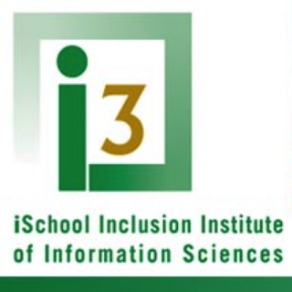
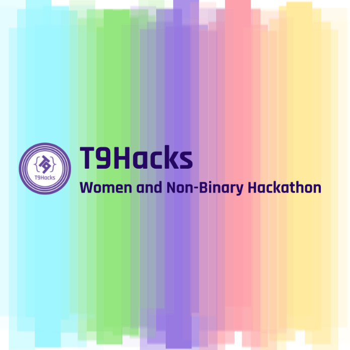

Brittany Ann KosPhD
Computing Educator & Researcher
Recent graduate at the University of Colorado Boulder
-
My work is focused increasing the representation of women and non-binary students in STEM, particularily in computing and technology fields.
-
I've developed introductory computing curricula for middle school and undergraduate students, worked as a teacher assistant for 8th grade science classes, and founded and designed a women and non-binary hackathon, T9Hacks.
-
I plan to contuine my work and research in informal education and outreach to broaded the participation of STEM.
-
Summer Programs
-

The iSchool Inclusion Institute (i3)
i3 Teaching Fellow – Summer 2018
The iSchool Inclusion Institute (i3) is an undergraduate research and leadership development program that prepares students from underrepresented populations for graduate study and careers in the information sciences. i3 Teaching Fellows will co-teach a two-week module to the 2018 cohort of i3 Scholars. Two Teaching Fellows are selected to co-teach a two-week Programming Module, introducing students to the basics of Python. Teaching Fellows will be responsible for developing and delivering the daily, in-class content of their respective modules.
-

Summer SuperSTEM
Summer 2015 – Instructor
Summer SuperSTEM is a summer program hosted by the Innovation Center, a maker space for the students in St. Vrain Valley School District.
Summer SuperSTEM: 3-D Printing Toy Design (intermediate level/grades 3-5)
Learn about the craft of toy design and manufacturing through 3-D printing. You will learn how to make 3D designs in print and with Google Sketchup, then print original toy designs on a 3D printer. What you design and make is limited only by your imagination!Summer SuperSTEM: Python Level 1 (high school level)
Learn the basics of Python, a common and accessible programming language. If you are new to programming, this is a great class for you. -

Digital CUrrents (ATLAS-Campos EPC Summer STEM Program)
Summer 2014 – Teaching Assistant
Digital CUrrents (once ATLAS-Campos EPC Summer STEM Program) is a three-week technology intensive summer workshop for high school students who are largely from underrepresented minority groups. Students learn to use software applications and gain programming skills to create and manipulate digital content and complete a final project that showcases their creative and technical talents. Workshop participants also visit with guest speakers about career opportunities in technology-related fields and enjoy field trips to local technology-focused businesses.
-
Outreach
-

T9Hacks
Founder, Director, Advisor – 2015-2019
T9Hacks is a women's hackathon promoting gender diversity in creative technology. The hackathon creates opportunity for women to explore new technologies, solve real-world problems, and create something amazing with a team.
T9Hacks Website News- T9 Hacks gathers women, non-binary people at CU Boulder for 24-hour hackathon
- Community Roundup: Hackathons Empowering Safety, Security, and Diversity
- T9Hacks continues to grow and thrive
- Female-focused, collaborative hackathon session slated for Feb. 10
- CU-Boulder's Atlas Institute hosts inaugural women-centric hack-a-thon
- T9Hacks brings women together for 24 hours of hacking
- T9 Hacks Highlights
- T9Hacks: Supporting Diversity in Tech
- CU ATLAS T9Hacks: Bridging the Gap Between Women & Tech
-

Science Discovery Summer Camp
Teaching Assistant – Summer 2013-2015
CU Science Discovery offers a variety of hands-on STEM (science, technology, engineering and math) camps for kids ages 5-18. Science Discovery offers intensive 1-3 week summer workshops for high school students. Workshops provide unique opportunities for older students to work in CU laboratories, interact with CU scientists, and explore STEM careers.
-

Earth Explorers
Board Member, Evaluation Lead, Senior Volunteer, Mentor – 2013-2015
Earth Explorers is an independent nonprofit that partners with local schools and research institutions to provide Science, Technology, Engineering and Math (STEM) curriculum with education in filmmaking to spark a lifelong interest in STEM topics.
-
Adjunct Instructor
-
[INFO 1201] Computational Reasoning 1: Expression and Media Transformation
Adjunct Instructor – Summer 2018
This course is a hands-on introduction to create, invent, and build with computer programming. No programming experience is necessary and all backgrounds are welcome. Students will become exposed to high-level computational concepts and practices that include algorithms, data, parallelism, abstraction, and debugging. Assignments and projects will involve learning to program using the Scratch and Python programming languages. The creative and problem-solving strategies introduced in this course are applicable across many domains beyond information and computer sciences.
-
[ATLS 1300] Code
Adjunct Instructor – Spring 2016
Introduces students to fundamental programming concepts and methodologies and apply them to creative projects. Students will learn to use code as a creative and artistic tool, and to utilize programming to find, define and solve problems in innovative ways.
-
[ATLS 1300] Code
Adjunct Instructor – Fall 2015
Introduces students to fundamental programming concepts and methodologies and apply them to creative projects. Students will learn to use code as a creative and artistic tool, and to utilize programming to find, define and solve problems in innovative ways.
-
[CSCI 2270] Computer Science 2: Data Structures
Adjunct Instructor – Summer 2015
Studies data abstractions (e.g., stacks, queues, lists, trees) and their representation techniques (e.g., linking, arrays). Introduces concepts used in algorithm design and analysis including criteria for selecting data structures to fit their applications.
-
[ATLS 3020] Digital Media 2
Adjunct Instructor – Spring 2015
A continuation of Digital Media 1 (ATLS 3010), this course introduces students to advanced digital media development including interactive programming, scripting, and database functionality. Emphasizes a historical and conceptual understanding of programming and computational theories.
-
Teaching Assistant (TA)
-
[INFO 1201] Computational Reasoning 1
Teaching Assistant (TA) – Fall 2018
This course is a hands-on introduction to create, invent, and build with computer programming. No programming experience is necessary and all backgrounds are welcome. Students will become exposed to high-level computational concepts and practices that include algorithms, data, parallelism, abstraction, and debugging. Assignments and projects will involve learning to program using the Scratch and Python programming languages. The creative and problem-solving strategies introduced in this course are applicable across many domains beyond information and computer sciences.
-
[COEN 1500] Introduction to Engineering
Teaching Assistant (TA) – Fall 2016
Provides an introduction to the engineering profession, including an examination of current discipline specializations and a focus on career paths for those trained in engineering. Provides sufficient knowledge of the engineering disciplines necessary to make an informed major choice.
-
[CSCI 4830] Special Topics: Computer Science Education
Teaching Assistant (TA) – Spring 2016
The computer science department is offering a 1-credit hour special topics course this semester on computer science education. If you are interested in teaching computer science or becoming involved in the computer science department as an undergraduate learning assistant (CA, PLA, or TA) this is the class for you. In this course, we will cover presentation techniques, how to lead a discussion session, assessment, dealing with difficult colleagues, and teaching styles. The class will be taught primarily through discussion and all students will have the opportunity to present and receive feedback in a friendly environment.
-
[ATLS 1220] Introduction to Computer Science Principles
Teaching Assistant (TA) – Fall 2014
This course is designed to introduce students to the central ideas of computer science, to instill ideas and practices of computational thinking, and to have students engage in activities that show how computing and computer science change the world. Rather than focus on a specific tool or programming language, this course focuses on the creative aspects of the field. Students will learn how to use computing as a means to understand and solve problems, reflect upon the cultural impact of technology, demonstrate computational thinking skills by building computer programs and games, learn information retrieval skills by researching and remixing media, and engage in other creative endeavors of computer science.
-
[ATLS 2000] Meaning of Information Technology
Teaching Assistant (TA) – Spring 2014
Surveys the history of information technologies and modern techniques of information production, storage, transmission, and retrieval. Emphasizes understanding not only the technological transformations in interpersonal, organizational, and mass communication, but also the technological, social and political changes that underlie the movement toward a digital society.
-
Current Work
-

T9Hacks
Founder, Lead Coordinator, Advisor – 2017 – Current
T9Hacks is a women's hackathon promoting gender diversity in creative technology. The hackathon creates opportunity for women to explore new technologies, solve real-world problems, and create something amazing with a team.
-
Kos, B. A. 2019. Understanding Female-Focused Hackathon Participants' Collaboration Styles and Event Goals. ICGJ '19: Proceedings of the International Conference on Game Jams, Hackathons, and Game Creation Events, (San Francisco, USA, 2019).
Winner of Best Paper Award - Kos, B. A. 2018. The Collegiate Hackathon Experience. ICER '18: Proceedings of the fourtinteeth annual International Conference on International Computing Education Research, (Espoo, Finland, 2018).
- Kos, B. A. 2017. Framing the Gender Diversity Conversation at Student Hackathons And Some Organizational Tips. Code Like a Girl.
- Kos, B. A. 2016. The Unique Hackathon Experience. University of Colorado Boulder.
-
Kos, B. A. 2019. Understanding Female-Focused Hackathon Participants' Collaboration Styles and Event Goals. ICGJ '19: Proceedings of the International Conference on Game Jams, Hackathons, and Game Creation Events, (San Francisco, USA, 2019).
-
Past Projects
-
Informal CS Training
Graduate Researcher Advised under Lecia Barker – 2017
This research project looked at an introductory non-cs computing classroom and how students would help teach each other. We tried an intervention that prompted and guided students through questions that were indented to help them solve programming problems.
Kos, B. A. 2017. The Collaborative Learning Framework: Scaffolding for Untrained Peer-to-Peer Collaboration. University of Colorado Boulder.
-
NCWIT Retention and Recruitment of Women in CS
Graduate Researcher Advised under Lecia Barker – 2016 – 2017
Worked as a social science researcher with the National Center for Women in Information Technology (NCWIT) on their Extension Services Project, which seeks to increase recruitment and retention of women in computing and technology undergraduate programs.
-
Grading at Scale
Lead Researcher Advised under Sarah Miller – 2016
In the Fall of 2018 I worked as a TA for the 700-student Introduction to Engineering Class. This study reported on the grading practices that the 4-person grading staff took to grade weekly assignments at scale.
Kos, B. A., Miller, S.. 2017. Grade-a-thons and Divide-and-Conquer: Effective Assessment at Scale. ASEE '17: American Society of Engineering Education 124th Annual Conference & Exposition, (Columbus, OH, 2017). [Full Paper PDF]
Conference Presentation PDF -
BlockyTalky
Research Assistant – 2016
BlockyTalky is a research and outreach project lead by Ben Shapiro in the Laboratory for Playful Computation. BlockyTalky teaches students to create interactive, networked physical computing devices by using the BlockyTalky software which is built on Scratch and utilizes Raspberry Pi's.
-
Gamification of Intro CS
Research Assistant – 2015
Worked under Kara Benhke, PhD on a gamified introductory Computer Science Principles course. CS Principles facilitated positive programming experiences for students, helped increase learning interest and improve attitudes of CS as a field of study, positively changed perceptions of CS as a creative practice, and also encouraged students to continue learning CS after the course had finished.
Behnke, K. A., Kos, B. A., Bennett, J. (2016). Computer Science Principles: Impacting Student Motivation & Learning Within and Beyond the Classroom. ICER '16 Proceedings of the 2016 ACM Conference on International Computing Education Research, (Melbourne, AUS, 2016), 171-180.
-
STEM Careers Infographic Project (SCIP)
Research Assistant – 2014 – 2015
Undergraduate research assistant.
- Kos, B. A. 2015. Computational Thinking for Middle School: A Case Study of an 8th Grade Multimedia Outreach Project. University of Colorado Boulder.
-
Kos, B. A., Sims, E. (2015). STEM Careers Infographic Project (SCIP): Teaching Media-Based Computational Thinking Practices. SIGCSE ‘15: Proceedings of the 46th ACM Technical Symposium on Computer Science Education, (Kansas City, MO, USA, 2015), 681.
Conference Poster PDF - Kos, B. A., Sims, E. (2014). Infographics: The New 5-Paragraph Essay. 2014 Rocky Mountain Celebration of Women in Computing, (Laramie, WY, USA, 2014).
-
Mapping Experiences
Research Assistant – 2011
Undergraduate research assistant.
Link, B. V., Kos, B. A., Wager, T. D., Mozer, M. (2011). Past Experience Influences Judgment of Pain: Prediction of Sequential Dependencies. In CogSci (33), 2011.